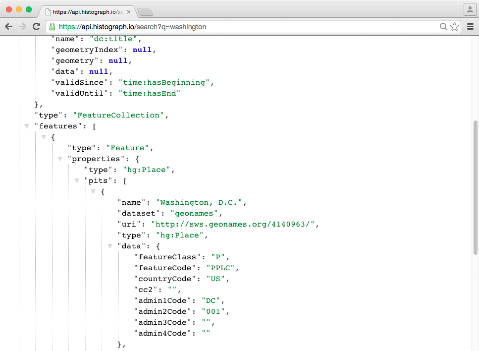
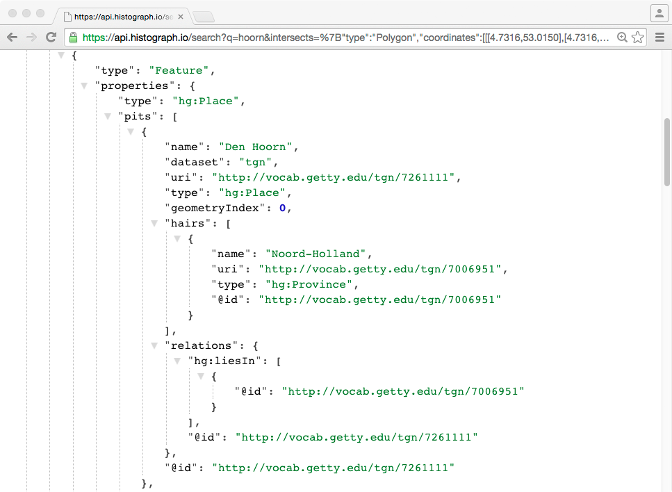
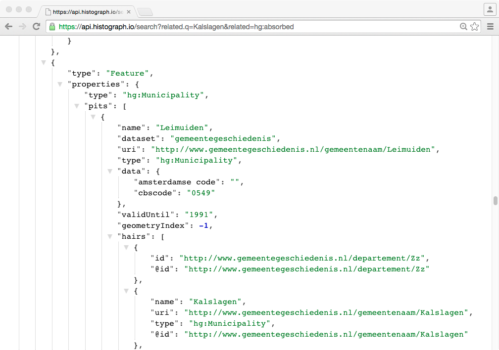

Historische Geocoder - Sprint 6 - Demo
Alle landen, en 2000 steden in 't buitenland

Fuzzy dates!
Begin- en einddatum van PIT
Voorheen: altijd ISO8601. Nu: niet meer!
1850
[1912, 1914]
[
"1982-07-12",
"1982-07-14"
]
1995±5
Zoek-API: zoeken op geometrie en tijd

Zoek-API: zoeken op relaties
